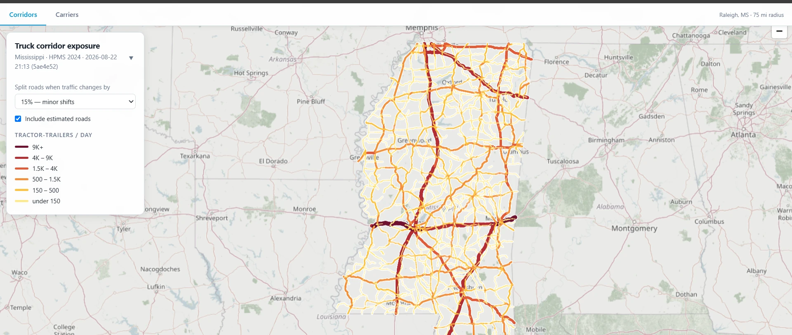
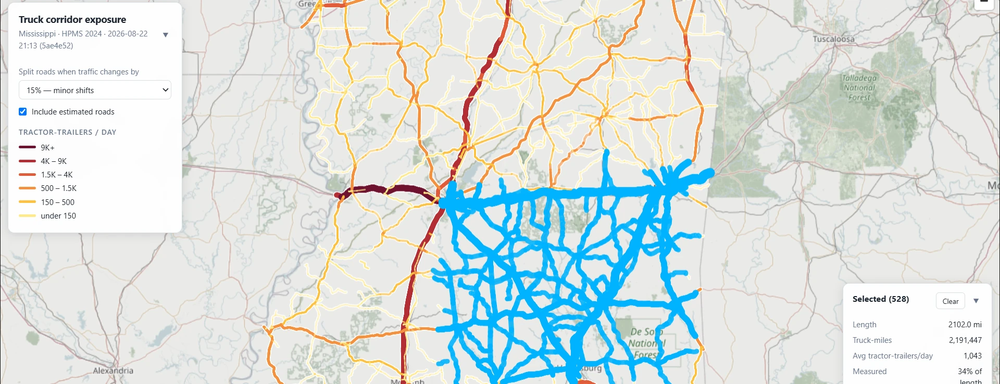
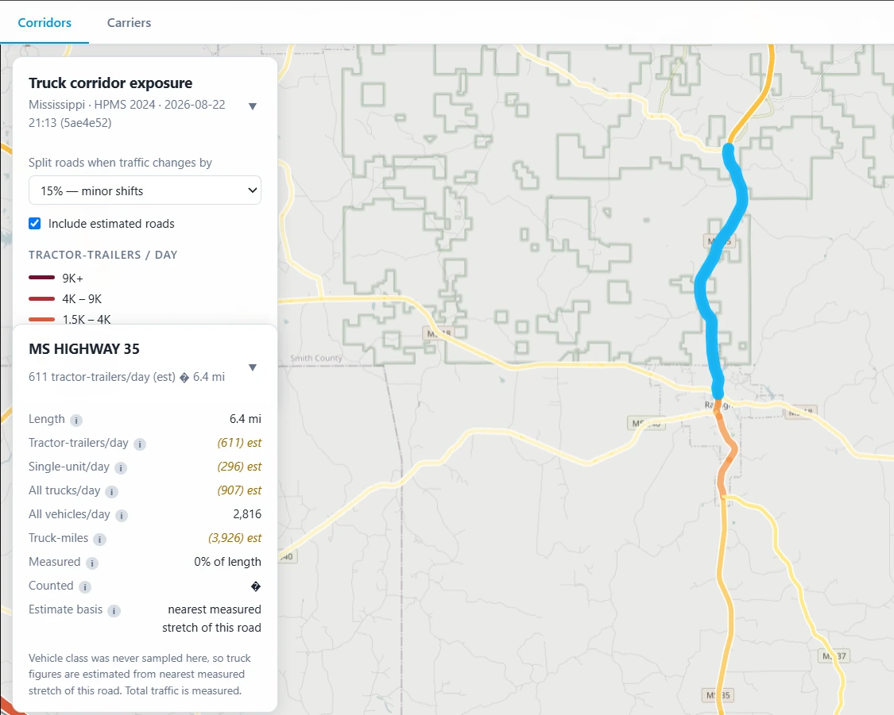
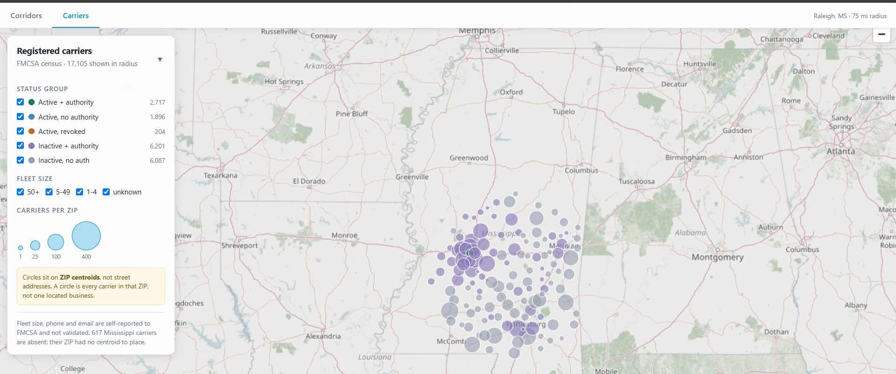
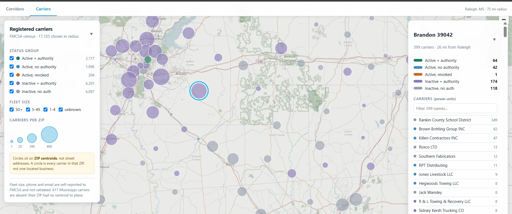

The attribution work told the owner where his calls came from. The app told him what happened to them. Then he asked something neither could answer: how much roadside work is out there at all, and how much of it does he need to win for the numbers to work? Nobody publishes that. So I estimated it, and built a second tool to find the fleets behind it.

Advertising decisions had gotten better but they'd hit a ceiling. The owner knew what a call cost him and what it earned. He had no idea how many calls were out there to begin with. Was he getting two percent of his market, or forty? Those are different businesses, and they call for different plans.
No dataset counts tire blowouts. There is no authority to look it up from, no trade association publishing it, no way to buy it.
So the tool doesn't try to count them. It models exposure instead: truck miles travelled from federal datasets, on the assumption that blowouts scale with truck-miles travelled. This leaves room for different models based on different blowout rate assumptions with a source of truth to base it all on. That was the question on the table: How much work is out there, and how do we capture it?
The input is FHWA's HPMS release, the federal highway inventory. It reports traffic counts and vehicle classification per road segment, but it arrives fragmented by arbitrary measurement points, so a single interstate shows up as thousands of disconnected pieces.
A six-stage Python pipeline turns that into something you can look at. Each stage is its own module and runs to a named checkpoint. Before handing off, each one checks its own invariants: mileage conserved, no double inventory, data integrity maintained.
This control sets how long each colored piece of road on the map is. It started out as a target: merge neighbors until sections average, say, ten miles. That erases the thing the map is for. Put a 3-mile stretch carrying 4,000 trucks a day next to a 7-mile stretch carrying 200, merge them to hit the target, and the map reports 1,340 across all ten miles. The busy stretch now looks quiet, the quiet stretch looks busy, and the hot spot is gone.
So it splits on traffic instead of length. Wherever volume changes by more than the percentage you pick, the road gets cut there. That 3-mile stretch stays its own section because it differs from its neighbor by far more than 15%. Length stops being a goal and becomes a result: busy areas break into many short sections, uniform rural highway stays in long ones. Moving the slider makes the map coarser or finer without ever averaging away a difference that matters.

HPMS reports total traffic far more often than it reports vehicle classification. About 45% of corridors have a solid vehicle count and no idea how many of those vehicles were tractor-trailers. Delivering accurate estimates that are honest about their source is vital. The final goal being a complete map with minimal gaps that isn't misleading.
To fill missing gaps, previous years data was first used. Ranging back to 2018, a chronological heirarchy of assigning values was used. For still un-measured segments, only those with measured segments on both sides were interpolated. The rest were left blank, leaving extrapolation to the end user.
Missing data is a fact of life in any dataset. Safe, informed estimates are vital while drawing a line on where the data is and where it isn't.
The estimator's donor chain rested on an assumption that sounds obvious. A real historical count of a road should beat a model of that road, so the 2018 National Network readings got priority.
Holdout testing disagreed: 19.8% error for the 2018 anchor against 6.8% for a neighboring 2024 segment. Seven years of drift cost more than being the same piece of road was worth. Demoting the anchor took overall error from 18.0% to 4.9%, and R² from 0.833 to 0.989.
Forty-three segments reported exactly zero tractor-trailers. Take those at face value and they're quiet roads. So I checked them against their neighbors. One stretch reported 20,536 vehicles a day and 1,212 box trucks, then zero tractor-trailers, with segments on both sides of it reporting plenty. That's not a measurement of zero, it's a missing measurement written down as zero. Believing it would have punched artificial holes through real freight corridors.
Estimated values live in their own fields, separate from measured ones, all the way through the pipeline and into the exported GeoJSON. The map renders them in italics with an est tag. Every field has an info button explaining where that number came from, and estimated fields look different than measured ones.

Corridors answers volume and where the work is. But if blowout volume isn't enough, how do we hit target profits? The answer is fleet accounts. Fleet accounts are the best work the business takes. They're repeat customers on payment terms that call with regular work. So the question is, how many fleets are near him, and how does he get in touch with them? Up to now, finding them had been word of mouth.
The Carriers tab loads the FMCSA carrier census, filtered to a radius around the business's home base: 17,105 registered carriers inside 75 miles. You can narrow that by operating status (active registration with interstate-authority, active without, revoked, inactive) and by fleet size. Fleet size is the one that matters when you're hunting for somebody running fifty trucks instead of one.


Python writes GeoJSON into a folder. Wrangler ships that folder to Cloudflare's edge. The browser fetches the files straight off it. There is no API layer anywhere in the project, and the only server-side code is a 156-line auth check borrowed off the business's tires app.
run_worker_first so the worker sees every request before the asset server answers.All the analysis happens offline, so nothing needs computing when a request comes in.
The two tabs need different protection, so they get different
protection. Corridor data is public federal highway information
without any personal or business information and stays
open to anyone. The carrier file holds FMCSA personal data: names,
phones, and emails for roughly 17,000 businesses. Though they were
gathered from public sources, no consent was obtained from the carriers
so the safe move is to keep it private. So the worker guards
exactly one path, /carriers.geojson, with borrowed auth
from the tires app.
None of this stops the tool from doing its job. Reporting truck-miles and listing nearby fleets by size both survive every limitation on the list. That's why the scope stops where it does.